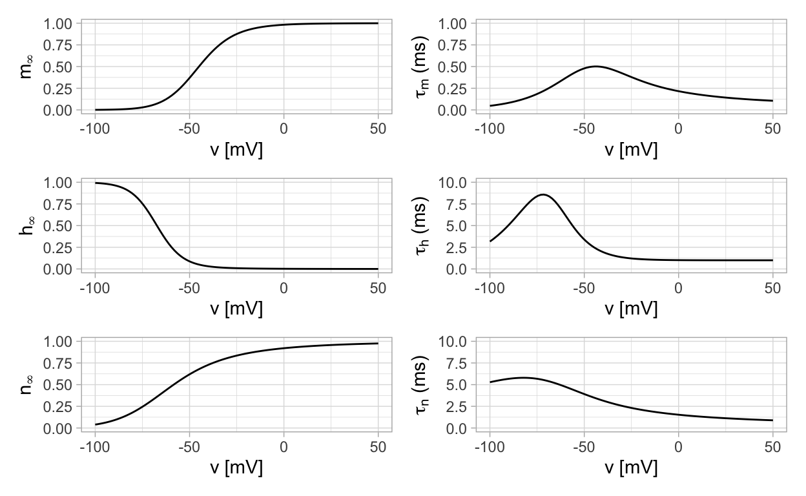
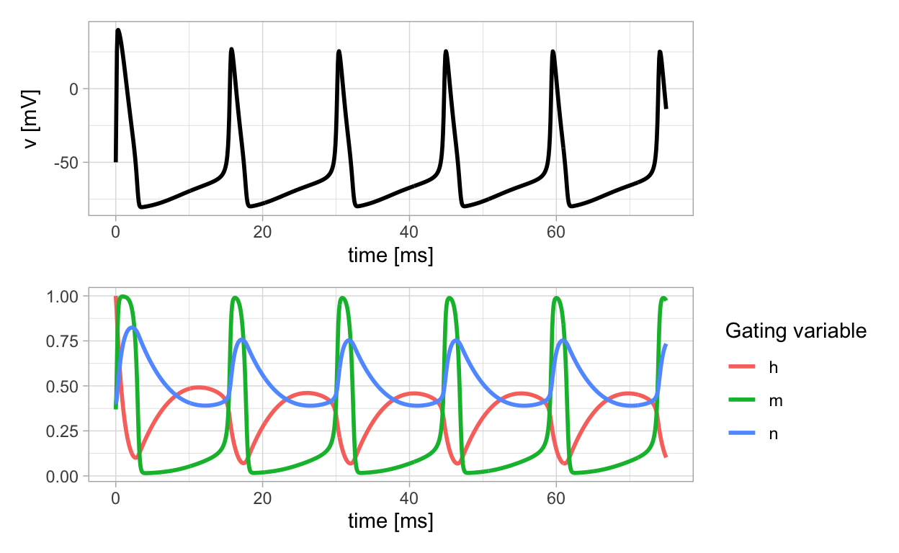
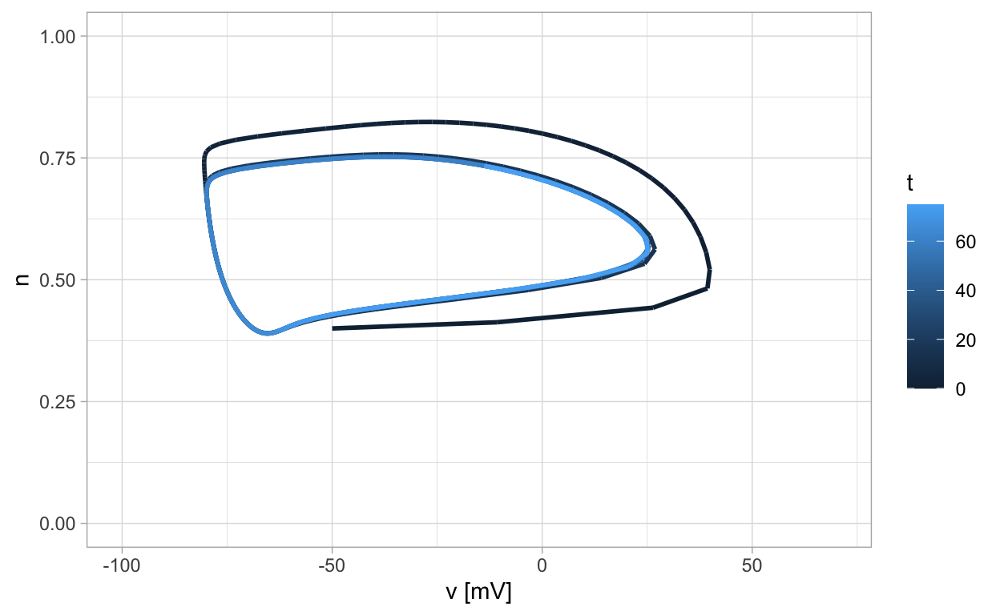

An introduction to the Hodgkin-Huxley ODEs.
After reading this section of notes, you should
know what is a membrane potential, an action potential, and an ion channel in the context of nerve cells (neurons);
have an appreciation for how the classical Hodgkin-Huxley ODEs model essential biophysics of neurons; and
be aware of some of the dynamics exhibited by neural systems and how this relates to neural physiology.
Nerve cells known as neurons can produce electrical impulses. During the 1940s and 1950s scientists conducted and published research results that elucidate the biophysics of nerve cell electrical impulses. This work is remarkable for its synthesis of experiment and theory. In particular, researchers measured electrical output from the giant axon of a squid and used these measurements as a basis for deriving a mathematical model that captures key features of the so-called action potential of the neuron.
Noteworthy is the paper A quantitative description of membrane current and its application to conduction and excitation in nerve by Alan Hodgkin and Andrew Huxley which presents equations now known as the Hodgkin-Huxley model. This paper is one in a series of five papers presenting research for which Hodgkin and Huxley where eventually awarded a Nobel Prize in Physiology or Medicine. The Hodgkin-Huxley model is foundational for mathematical and computational neuroscience, and the equations have generated a lot of interest in the field of biomathematics due to the interesting dynamics they exhibit.
In this section of notes, we present the classical Hodgkin-Huxley ODEs and attempt to explain what they model. Additionally, we suggest some other avenues of research in mathematical neuroscience. We proceed by quickly reviewing the biophysical concepts that are most essential in understanding the meaning of the terms in the Hodgkin-Huxley model.
Here we follow section 1.1 of (Börgers 2017) in presenting the biophysical background and terminology needed to understand the formulation of the classical Hodgkin-Huxley ODEs.
Recall from physics that electric potential is the work required to move a unit of electric charge. Nerve and muscle cells contain and are surrounded by charged particles in the form of ions. This may result in a difference in electric potential between the exterior and interior of a cell that is known as a membrane potential. Further, nerve and muscle cells are capable of generating brief spikes in the membrane potential creating what is known as an action potential. Thus, physiologists say that nerve and muscle cells are excitable. Our goal is to understand and model the mechanisms underlying the electrical activity in nerve cells known as neurons.
Neurons are one of the primary cells in the brain. A neuron possesses a cell body known as a soma, input branches called dendrites, and an output unit known as an axon. Moreover, neurons are filled and surrounded by fluid containing sodium (\(\text{Na}^{+}\)), potassium (\(\text{K}^{+}\)), chloride (\(\text{Cl}^{-}\)), and calcium (\(\text{Ca}^{2+}\)) ions. The superscripts denote the electric charge of the ion. We will denote the concentration of ion \(\text{X}\) by \([\text{X}]_{\text{in}}\) if it is within the cell and \([\text{X}]_{\text{ex}}\) if it is outside the cell.
It is known that ions can pass through the cell membrane of a neuron through so-called ion channels. These channels are typically ion specific in that a sodium ion channel only lets sodium through, a potassium channel only lets potassium through, and so on. Additionally, there are ion pumps at the neuron cell membrane that actively transport ions in or out of a cell but not necessarily at the same rate. For example, the well-known sodium-potassium pump removes sodium and intakes potassium at a 2 potassium for 3 sodium ratio. The point is that this prevents the occurrence of a perfect balance of ion concentrations inside and outside of a neuron cell membrane. Thus, we have an explanation for the membrane potential of a neuron.
Going further, the membrane potential of a neuron can decrease (known as hyperpolarization) creating a so-called inhibitory state, or increase (known as depolarization) creating a so-called excitatory state. Researchers have observed experimentally these changes in time of the membrane potential of neurons. See, for example, figures in the paper of Han et al, where one can see a plot of a recording of membrane potential from a neuron in the superior cervical ganglion of a rat. What is seen is that the voltage corresponding to the membrane potential slowly rises until it reaches a threshold level (known as a firing threshold) then a sudden rapid increase in voltage occurs creating a action potential. When a neuron generates an action potential, one often says that it spikes or fires. This is all based on opening and closing of ion channels and the ion channel activity is incorporated into the Hodgkin-Huxley mathematical we describe next.
Let \(v(t)\) denote the neuron membrane potential at time \(t\) measured in units of millivolts (mV). For the purposes of the Hodgkin_Huxley model, time will be measured in units of milliseconds (ms). A principle part of the Hodgkin-Huxley models expresses how \(v\) changes over time. We start by assuming that a nerve cell membrane acts as a capacitor so that
\(Cv = Q\)
where \(C\) is the (constant) capacitance and \(Q\) is the electric charge across the membrane. Recall that the total current relates to the charge by
\(I_{\text{total}} = \frac{dQ}{dt}\)
so that if we differentiate both sides of \(Cv=Q\) we obtain
\(C\frac{dv}{dt} = I_{\text{total}}\)
Based on experiments, Hodgkin adn Huxley determined that the total current \(I_{\text{total}}\) arises from a combination of
a sodium induced current \(I_{\text{Na}}\),
a potassium induced current \(I_{\text{K}}\),
a “leak” current \(I_{\text{L}}\) induced by chloride and other ions, and
an experimentally injected current \(I\).
Thus,
\(C\frac{dv}{dt} = I_{\text{Na}} + I_{\text{K}} + I_{\text{L}} + I\)
which is the primary equation for the time rate of chance of the membrane potential \(v\).
Further, it is assumed that the sodium, potassium, and leak currents all obey Ohm’s law which states that the current is proportional to a difference in voltage leading to equations
\[ \begin{align} I_{\text{Na}} &= g_{\text{Na}}(v_{\text{Na}} - v) \\ I_{\text{K}} &= g_{\text{K}}(v_{\text{K}} - v) \\ I_{\text{L}} &= g_{\text{L}}(v_{\text{L}} - v) \end{align} \] where \(v_{\text{Na}}\), \(v_{\text{K}}\), and \(v_{\text{L}}\) are the reversal potential values for sodium. potassium, and leak, respectively. The values \(g_{\text{Na}}\), \(g_{\text{K}}\), and \(g_{\text{L}}\) are the conductances. Thus, we have that
\(C\frac{dv}{dt} = g_{\text{Na}}(v_{\text{Na}} - v) + g_{\text{K}}(v_{\text{K}} - v) + g_{\text{L}}(v_{\text{L}} - v) + I\)
This appears to be a fairly simple equation. However, it has been determined that while that leak conductance \(g_{\text{L}}=\bar{g}_{\text{L}}\) with \(\bar{g}_{\text{L}}\) a constant, in contrast, the sodium and potassium conductances change in time in concert with the membrane potential \(v\). Thus, it is required to derive equations that relate how the sodium and potassium conductance functions vary. In order to do this, we take in to account the actions of the ion channels discussed previously.
From an analysis of experimental results, Hodgkin and Huxley concluded that
\[ \begin{align} g_{\text{Na}}(t) &= \bar{g}_{\text{Na}} m(t)^3 h(t) \\ g_{\text{K}}(t) &= \bar{g}_{\text{K}} n(t)^4 \end{align} \] where the three gating variables \(m\), \(h\), and \(n\) are dimensionless time varying functions that each satisfy a differential equation of the form
\(\frac{dx}{dt} = \frac{x_{\infty}(v) - x}{\tau_{x}(v)}\)
where \(x_{\infty}(v)\) and \(\tau_{x}(v)\) are functional forms depending on the membrane potential.
Thus, the Hodgkin-Huxley model is
\[ \begin{align} C\frac{dv}{dt} &= \bar{g}_{\text{Na}}m^3 h (v_{\text{Na}} - v) + \bar{g}_{\text{K}}n^4(v_{\text{K}} - v) + \bar{g}_{\text{L}}(v_{\text{L}} - v) + I \\ \frac{dm}{dt} &= \frac{m_{\infty}(v) - m}{\tau_{m}(v)} \\ \frac{dh}{dt} &= \frac{h_{\infty}(v) - h}{\tau_{h}(v)} \\ \frac{dn}{dt} &= \frac{n_{\infty}(v) - n}{\tau_{n}(v)} \end{align} \]
which is a coupled system of nonlinear equations. We still need to describe the functional forms \(m_{\infty}(v)\), \(\tau_{m}(v)\); \(h_{\infty}(v)\), \(\tau_{h}(v)\); and \(n_{\infty}(v)\), \(\tau_{n}(v)\), but first we consider what is the biophysical interpretation of the gating variables \(m\), \(h\), and \(n\).
A sodium channel has four gates aligned in series such that three of the gates are of one type (say type m), and one of the gates is of a second type (say type h). If \(m\) is the fraction of open m-gates and \(h\) is the fraction of open h-gates, then the fraction of open sodium channels is \(m^3h\). Similarly, we assume that potassium has four gates aligned in series all of the same type, type n. Then the fraction of open potassium channels is \(n^4\).
As mentioned, each of the gating variables \(m\), \(h\), and \(n\) satisfy a differential equation of the form
\(\frac{dx}{dt} = \frac{x_{\infty}(v) - x}{\tau_{x}(v)}\)
where there are two functional forms for each equation. The functional forms \(x_{\infty}(v)\) for \(x=m,h,n\) can be thought of as equilibrium values for \(m,h,n\) but ones that vary with the value of \(v\). The functional forms \(\tau_{x}(v)\) establish the time-scale on which an equilibrium is reached. Detailed expressions for these functional forms may be found on page 19 of (Börgers 2017). Insead of writing them down here, we implement them in R code and display their graphs.
Here is the R code implementing the functional forms:
alpha_h <- function(v){
alpha_h<-0.07*exp(-(v+70)/20)
}
alpha_m <- function(v){
a_m <- ifelse(abs(v+45)>1.0e-8,(v+45)/10./(1-exp(-(v+45)/10)),1)
}
alpha_n <- function(v){
alpha_n<-0.01*(-60.0-v)/(exp((-60-v)/10)-1)
}
beta_h <- function(v){
beta_h<-1./(exp(-(v+40)/10)+1)
}
beta_m <- function(v){
beta_m<-4*exp(-(v+70)/18)
}
beta_n <- function(v){
beta_n<-0.125*exp(-(v+70)/80)
}
h_inf <- function(v){alpha_h(v)/(alpha_h(v) + beta_h(v))}
m_inf <- function(v){alpha_m(v)/(alpha_m(v) + beta_m(v))}
n_inf <- function(v){alpha_n(v)/(alpha_n(v) + beta_n(v))}
tau_h <- function(v){1/(alpha_h(v) + beta_h(v))}
tau_m <- function(v){1/(alpha_m(v) + beta_m(v))}
tau_n <- function(v){1/(alpha_n(v) + beta_n(v))}
Here are plots of the functional forms.
v_df <- tibble(v=c(-100,50))
p_m_inf <- v_df %>% ggplot(aes(x=v)) +
geom_function(fun=m_inf) +
ylim(c(0,1)) +
xlab("v [mV]") +
ylab(TeX(r'($m_{\infty}$)'))
p_m_tau <- v_df %>% ggplot(aes(x=v)) +
geom_function(fun=tau_m) +
ylim(c(0,1)) +
xlab("v [mV]") +
ylab(TeX(r'($\tau_{m}$ (ms))'))
p_h_inf <- v_df %>% ggplot(aes(x=v)) +
geom_function(fun=h_inf) +
ylim(c(0,1)) +
xlab("v [mV]") +
ylab(TeX(r'($h_{\infty}$)'))
p_h_tau <- v_df %>% ggplot(aes(x=v)) +
geom_function(fun=tau_h) +
ylim(c(0,10)) +
xlab("v [mV]") +
ylab(TeX(r'($\tau_{h}$ (ms))'))
p_n_inf <- v_df %>% ggplot(aes(x=v)) +
geom_function(fun=n_inf) +
ylim(c(0,1)) +
xlab("v [mV]") +
ylab(TeX(r'($n_{\infty}$)'))
p_n_tau <- v_df %>% ggplot(aes(x=v)) +
geom_function(fun=tau_n) +
ylim(c(0,10)) +
xlab("v [mV]") +
ylab(TeX(r'($\tau_{n}$ (ms))'))
(p_m_inf + p_m_tau) / (p_h_inf + p_h_tau) / (p_n_inf + p_n_tau)

A few points to take away include
The time scale corresponding to the \(m\) gating variable is an order of magnitude smaller than for \(h\) and \(m\). The consequence of this is that the Hodgkin-Huxley model exhibits slow-fast dynamics. We will discuss what this means in a future section of notes.
The functions \(m_{\infty}\) and \(n_{\infty}\) are increasing functions of membrane potential while \(h_{\infty}\) is a decreasign function of membrane potential. Due to this, \(m\) and \(n\) are considered activation variables while \(h\) is considered to be an inactivation variable.
The Hodgkin-Huxley ODEs are complicated and difficult to work with analytically. Here we present some numerical solutions, discuss key features of the dynamics, and indicate some avenues of further study.
We begin by implementing the Hodgkin-Huxley equations in R code.
HH <- function (t, y, parameters) {
with(as.list(c(y,parameters)),{
# variables
v <- y[1]
h <- y[2]
m <- y[3]
n <- y[4]
dv <- (gna*m^3*h*(vna - v) + gk*n^4*(vk - v) + gl*(vl - v) + iext)/C
dh <- (h_inf(v) - h)/tau_h(v)
dm <- (m_inf(v) - m)/tau_m(v)
dn <- (n_inf(v) - n)/tau_n(v)
return(list(c(dv, dh, dm, dn)))
})
}
In order to solve the equations numerically, it is necessary to list parameter values and initial conditions. This is done in the following code.
The next step is to set time points at which a numerical solution is desired and then to call the numerical solver. This is done in the following code.
Finally, we plot out numerical solutions.
HHsol <- data.frame(t=out[,"time"],v=out[,"v"],h=out[,"h"],m=out[,"m"],n=out[,"n"])
p1 <- HHsol %>%
ggplot(aes(x = t, y = v)) +
geom_line(aes(x = t, y = v),lwd=1) +
labs(x="time [ms]",y = "v [mV]")
p2 <- HHsol %>%
gather(Column, Value, -t,-v) %>%
ggplot(aes(x = t, y = Value, color = Column)) +
geom_line(aes(x = t, y = Value),lwd=1) +
labs(x="time [ms]",y = " ") +
guides(color=guide_legend(title="Gating variable"))
p1 / p2

The previous plot of solutions of the Hodgkin-Huxley equations exhibit the features of the action potential that have been observed in physical measurements as described earlier. Notice how the membrane potential slowly increases to a threshold level and then quickly spikes.
While the Hodgkin-Huxley equations form a four-dimensional system, we can project components into the plane two at a time. It is illuminating to project the \(v\) and \(n\) components into the plane. When this is done, we recognize the presence of a stable limit cycle.

This feature of the Hodgkin-Huxley model is the inspiration for certain reduced models for neural dynamics. Our goal moving forward will be to develop mathematical tools that can be used to study the dynamics of these reduced models.
The Hodgkin-Huxley model originally appears in (Hodgkin and Huxley 1952). Our discussion largely follows Chapters 1, 3, and 4 from (Börgers 2017). The text (Ermentrout and Terman 2010) provides similar coverage but goes further into some of the mathematics associated with mathematical neuroscience. We also reccommend the recorded conference talks Fields of Dreams: Modeling and Analysis of Large Scale Activity in the Brain by Bard Ermentrout and Brain Control - It’s Not Just for Mad Scientists by Jeff Moehlis.
Text and figures are licensed under Creative Commons Attribution CC BY-NC 4.0. The figures that have been reused from other sources don't fall under this license and can be recognized by a note in their caption: "Figure from ...".